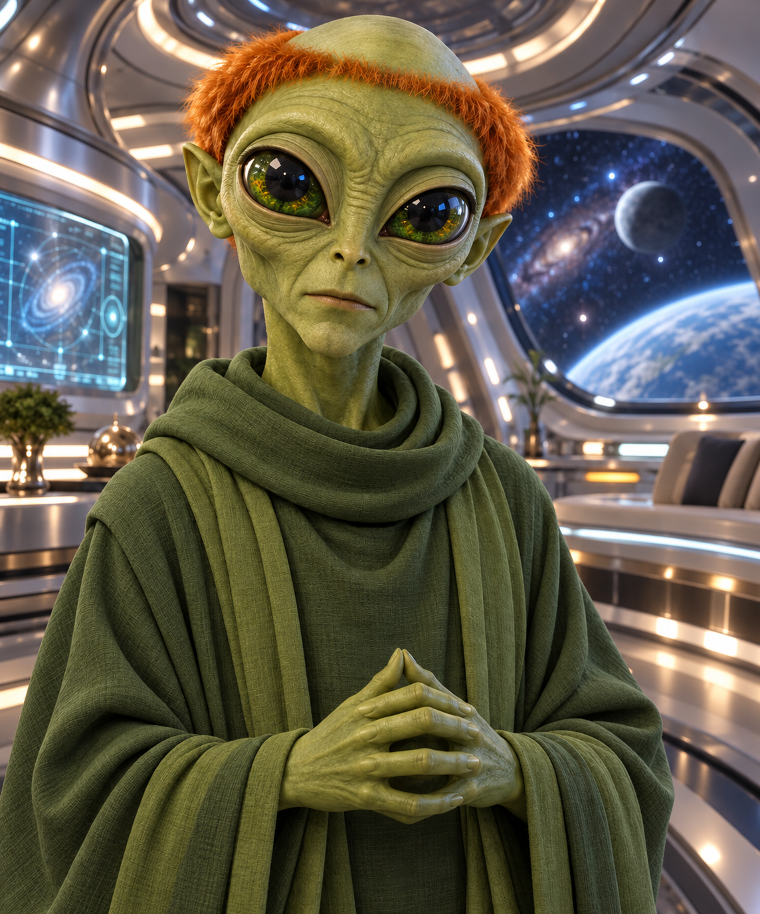

SPECIES
Namuh
His alien physiology, knowledge and way of thinking make Earth both fascinating and dangerously unfamiliar.

THE ALIEN GUIDE
“Nivek approached every disaster logically. Kevin rarely gave him enough time.”
Calm. Precise. Intelligent. Quietly compassionate. Usually the person calculating the danger while Kevin is already running towards it.
WHO IS NIVEK?
Nivek is calm, methodical and almost impossible to fluster. He approaches every problem through observation and logic, although Kevin has a habit of creating problems faster than Nivek can explain them.
Beneath Nivek's careful words is more feeling than he usually allows anyone to see. His compassion appears in what he does: protecting others, keeping his promises and refusing to abandon a life.
His friendship with Kevin changes them both. Nivek becomes a guide, ally and something close to family, while Kevin reminds him that logic is not the only reason to risk everything.
AT A GLANCE
SPECIES
His alien physiology, knowledge and way of thinking make Earth both fascinating and dangerously unfamiliar.
NATURE
Nivek chooses his words carefully and treats every decision as a problem that deserves proper thought.
HUMAN ALLY
Impulsive where Nivek is methodical, and the human boy who becomes far more than someone he must protect.
KNOWLEDGE
From Toroids and the A-Mat to spacecraft and the Power Cell, Nivek understands technology beyond anything known on Earth.
STORY APPEARANCES
Nivek is one of the central characters in the Ke'Valien trilogy.
PEOPLE CLOSE TO NIVEK
Friendship draws Nivek beyond duty and gives him people whose safety matters more than any calculation.

CLOSEST FRIEND
Impulsive, loyal and impossible to ignore, Kevin becomes the human Nivek is willing to risk everything to protect.

YOUNG ALLY
Thoughtful, observant and careful, Kieran earns Nivek's respect by facing danger without losing his compassion.

FELLOW ALIEN
Closely connected to Nivek's past and the Power Cell, Leinad's choices place friendship and duty in conflict.
ONE PRECISE ALIEN
Nivek may trust logic, but the choices that define him come from somewhere harder to measure. Again and again, he discovers that loyalty, compassion and friendship can outweigh the safest calculation.
Meet the Rest of the Cast